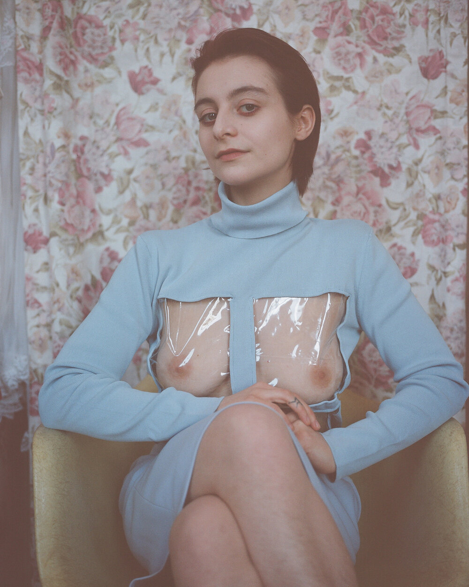

Martina Cox;
The surrealist dress maker!
- 
Martina Cox is an artist, designer and NYC native working out of Brooklyn. Since graduation from The Cooper Union in 2018,
her practice consists of using garments to assess the performative and sculptural functions of clothes concerning the body. Martina has been a featured designer of
conceptual clothing store Cafe Forgot since 2018. She has also sold her clothes at Tuza in Mexico City, and Soba32, in Berlin.
She is currently making one-of-one pieces and taking custom commissions to order,
as a way to push back against fast fashion business models set in place in todays’ fashion world.
Surrealism, and the fashion that came out of it, has been a vital component & defining reference to the clothing I’ve designed! Surrealism and fashion are so deeply intertwined and so much of the work that emerged from the era of Surrealism has been a source of visual inspiration for me and definitely would make up a large part of my imaginary dream closet.
-Martina Cox
The followig is a time-line of the designers projects, expirience, work and exhibitions:
- 2019 - Group Exhibition, “Pillow Talk Presents Sex and Love in the City” New York, NY
- 2019 - Present, Costume Design/contributor; Feature film “El Planeta” Directed byartist Amalia Ulman
- 2018 - Group Exhibition, “End of Year Show” The Cooper Union, New York, NY.
- 2018 - Solo Exhibition, “Pay no attention to that man behind the curtain” The Cooper Union, Senior Thesis Exhibition; New York, NY.
- 2018 - Present, Resident Designer & Artist; Cafe Forgot pop up stores (works sold)
- 2018 - 2019 Shop owner & Brand Ambassador; Depop: @fujiyama_mama
- 2017 - Group Exhibition, “Tie His Hands Gently” Romeo NYC; New York, NY.
- 2017 - Gallery Intern & Graphic Designer; Romeo Gallery NYC
- 2016 - Solo Exhibition, “WallFlower” Erkelenzdamm 51 Ausstellungsraum; Berlin.
- 2016 - Photo Assistant; Thomas Whitney Cox, Photographer
- 2016 - Studio Assistant / Canvas Stretcher; Thomas Leo Chapman, Visual Artist
- 2015 - 2018, Collaborator and Studio Assistant; Michael Dweck / Ditch Plains Press
- 2015 - Solo Exhibition, “Re Covered” The Cooper Union; New York, NY.
- 2014 - Group Exhibition, “15WARREN” 15 Warren Construction site; New York, NY.
- 2014 - Design Intern; Nicole Miller, Fashion Designer
About the creative process;
Cox makes PVC window panes and adds them to her garments—usually around the chest or butt area. The resulting playfulness lends itself to rear view windows and little nip slips. If the ’50s housewife wanted to put a pie on her windowsill to cool off, why not cool off a boob or an ass cheek as well? In Cox's hands, a vintage calendar dish towel can become a pair of panties, an old plastic comforter bag becomes a panel that covers(?) the stomach between a cream-colored bra and a slip skirt. Her works exists in this space of irony, chaos, and sexuality.
All the social links!
Cox was raised in New York, but has family in Italy.
She spent a lot of her childhood alongside her very Italian grandmother who she watched cook huge meals, sew,
and hang the family laundry.But Cox didn’t decide from watching her grandmother sew and crochet all of those years ago that she wanted to design her own clothes.
She made the connection after the fact. Instead, Cox went to Cooper Union to study painting, and much of her approach to her work is embedded in her training as a painter.
“I like to approach making garments as a collage or [in terms of] composition.
I like playing with balance and color and using those techniques that I was taught in school but to make something like this,”
she tells me of her training as she shows me a slip dress held together by handmade “clingy men.”
Her time at Cooper wasn’t without struggle,
felt lost for much of her time there. She took a year off of school and dedicated her time to selling a lot of wholesale ‘50s and ‘60s clothing out of her apartment,
and then later moved to Berlin. It was during her time abroad that she decided she wanted to make clothes to wear at the club. “I really wanted to make this one top that I saw in a Dalí painting to wear to the club.
It was this jacket that had these levers sticking out of the shoulders. And when you pulled them down, they would be window panes that pulled up,”
she says “I wanted to make that and wear it to the club to make people uncomfortable when I flash them.” Eventually Cox made it back to New York and completely shifted her focus at school,
transitioning to designing clothes full time.